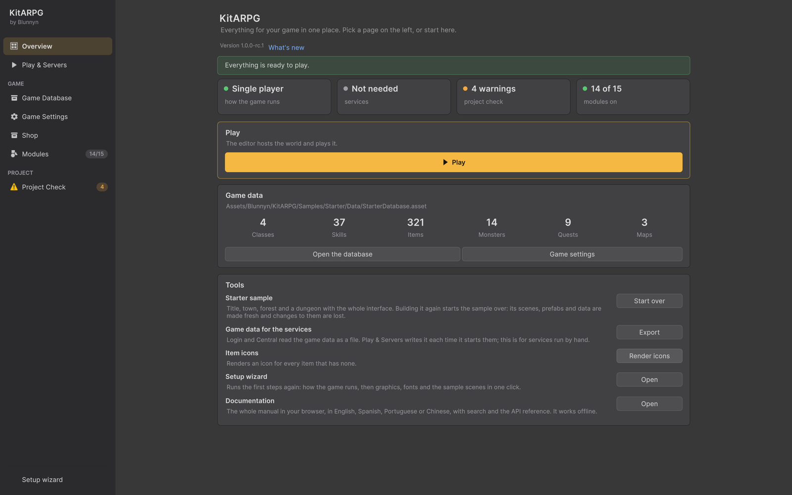

Overview
Overview is the first page of the KitARPG window. It tells you whether the project is ready to play, lists what is left to do in order with a button for each step, and gives you Play and the most used tools in one place.
Where it is

Open the KitARPG window (KitARPG > Open KitARPG or Ctrl/Cmd+Shift+K) and pick Overview at the top of the sidebar. When kit updates are waiting, the sidebar shows their count next to Overview.
The header
The page starts with the title "KitARPG" and the line "Everything for your game in one place. Pick a page on the left, or start here." Under it:
- Version followed by the kit version you have installed.
- What's new, a link that opens the changelog window with every version, newest first. The same window opens from KitARPG > What's New.
To do
When something stands between your project and playing, an orange card titled To do appears with the line "In order. Each button does that step." Each row has a light, a title, a detail line and a button. Do them from top to bottom.
When nothing is left, the card is replaced by a green line:
- Single player: "Everything is ready to play."
- MMO: "Everything is ready: services up, map server current, nothing missing."
The rows that can appear, in the order they are listed:
| Row | When it shows | Button | What the button does |
|---|---|---|---|
| 1 kit update or N kit updates | The kit has added something your game doesn't have yet. The detail names each update and says that what you changed by hand stays | Apply | Shows one dialog listing every update and exactly what it changes, then applies them in order. See Updating the kit |
| N problem(s) in the project | The last project check found errors. "Builds stop on them." | Review | Opens Project Check |
| Build the services | MMO only. Login, Central, the Shop and the launcher aren't compiled yet. While building, the detail reads "Building..." and the button hides | Build | Runs dotnet build on the services solution |
| The services didn't build | MMO only. The last build failed. The detail shows the error lines | Try again | Builds again |
| Build the map server | MMO only, when at least one map runs from the map server build and that build is missing, lacks the scene of a map, or is older than a script, scene or assembly definition it was built from. The detail says which. If the services run, it adds "Restart the services after it." | Build | Builds the map server for your editor's platform (Mac or Windows) |
| Start the services | MMO only. The services are built but not running | Start | Starts Login, Central and the maps on this computer |
| Restart the services | MMO only, warning. The services run code or a map server older than what is built now | Restart | Stops the services and starts them again |
| No map reached Central | MMO only, error. Central has answered for more than 25 seconds and no map has registered. Players can't get in | Build or Open | Build when the map server build is out of date; build it, then restart. Otherwise Open goes to Play & Servers, whose log says why |
| Start the shop | MMO only. The Shop service is in the project, the shop is on in the launcher settings and the In-game shop module is on, the service is built but not running | Start | Starts the Shop service on its own. See Shop |
The rows for the services and the map server are the same checks Play & Servers makes, in one list. If you prefer to see the full detail, work from Play & Servers instead.
Status tiles
Four tiles sit under the To do card. Click a tile to open its page.
| Tile | Values | Opens |
|---|---|---|
| How the game runs | Single player, MMO, or Not set when there is no settings asset | Play & Servers |
| Services | Not needed in single player; in MMO Running (Login and Central answer), Starting or Stopped | Play & Servers |
| Project check | ... while the first check runs, N errors, N warnings or All good | Project Check |
| Modules on | 11 of 15 style count, or None when no Game Instance was found | Modules |
Play
The Play card changes with the mode:
| Mode and state | Card line | Buttons |
|---|---|---|
| Single player | "The editor hosts the world and plays it." | ▶ Play opens the Title scene and enters Play mode as a single player game |
| MMO, services stopped | "Start the services, then play as a client." | Start services opens Play & Servers, where you start them. Play with two players |
| MMO, services running | "The services are up. Play joins them as a client." | ▶ Play opens the Title scene and plays as a client of the local services. Play with two players |
Play with two players opens a second editor and logs both in with test accounts. It needs Unity's Multiplayer Play Mode package and is greyed out in Play mode. See Playing with two players.
▶ Play is greyed out while the editor is already in Play mode, and in MMO while the services are stopped.
Game data
The Game data card shows the path of your game database and six counts: Classes, Skills, Items, Monsters, Quests and Maps. The counts include entries the database reaches through references, not only the ones in its lists.
If the database has problems, an orange line says "N problem(s) in the data. The database page lists them."
Buttons:
- Open the database opens the Game Database.
- Game settings opens Game Settings.
When the project has no game database yet, the card says "No game database yet." and shows Open the game database, where you can create one.
Tools
| Tool | Button | What it does |
|---|---|---|
| Starter sample | Build sample or Start over | Builds the starter sample: the Title, Town and Forest scenes, a dungeon, the network prefab, player prefabs, the whole interface and the sample data. When the sample already exists, the button reads Start over and asks first, because it makes the sample's scenes, prefabs and data again from scratch and changes to them are lost. Your own assets elsewhere stay |
| Game data for the services | Export | Writes gamedata.json into the Login folder of the services source, for services you run by hand. Play & Servers writes its own copy each time it starts the services, so you don't need this for local play |
| Item icons | Render icons | Renders an icon for every item that has none. Same as KitARPG > Render Missing Item Icons |
| Setup wizard | Open | Runs the first steps again: how the game runs, then graphics, fonts and the sample scenes in one click |
| Documentation | Open | Opens this documentation in your browser, from the copy inside the package (Documentation/Web), in the editor's language when it is English, Spanish, Portuguese or Chinese. It works offline. The same as KitARPG > Documentation |
Start over is not the way to get what a newer kit version adds. It rebuilds the sample and loses every change you made to the sample's HUD, prefabs, scenes and data. Use the kit updates in the To do card instead: they only add what is missing.
Single player and MMO
- In single player, the To do card only shows kit updates and project errors. There are no services, map server or shop to set up.
- In MMO, the card walks you through building the services, building the map server, starting the services and starting the shop.
Common mistakes
- "No map reached Central" after building a new map. The map server build doesn't have the new scene yet. Press Build, wait for the build, then restart the services.
- The services tile stays on Starting. Open Play & Servers and look at the log. A port in use or a missing .NET 10 SDK are the usual causes.
- Project check shows "..." for a long time. The check runs once when the window opens. A very large project takes a few seconds; it doesn't open scenes for this quick check.